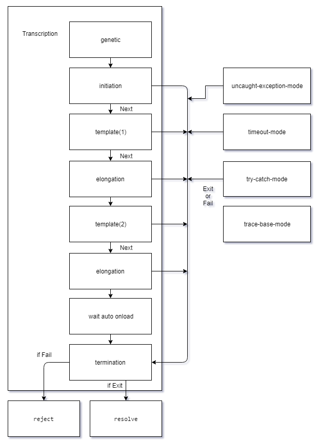

Process Control
Lambda用毫秒算錢，不能再await下去了。
Nucleoid具有生命週期

初始化：initiation
initiation開始前會執行的函數，性質跟template是相等的，必須宣告next才會繼續執行。
gene.setInitiation((base, enzy, next, exit, fail) => {
// do something...
next()
})
延長期：elongation
elongation在每次執行完template後會執行一次，為同步進行。
gene.setElongation((base, exit, fail) => {
// do something...
})
終止期：termination
termination在所有的程序走完後會進行執行一次，為同步進行，並且獲得root status。
如果有啟用
try-cache-mode或uncaught-exception-mode下捕捉到錯誤也會執行該函數
gene.setTermination((base, status) => {
// do something...
})
輸出messenger
整個流程的最終產物只要進入termination就會輸出messenger。
可以使用
isMessenger判定輸出產物是否為messenger或是其他擲出的錯誤。
gene.transcription().then((messenger) => {
// do something...
}).catch((messenger) => {
if (Nucleoid.isMessenger(messenger)) {
// do something...
}
})
base 和 status
messenger包含最終輸出狀態的base和status。
if (messenger.isError()) {
let errors = messenger.status.getErrorStatus()
console.error(JSON.stringify(errors, null, 4))
}
Transcription是指DAN經由RNA聚合酶輸出messengerRAN的過程